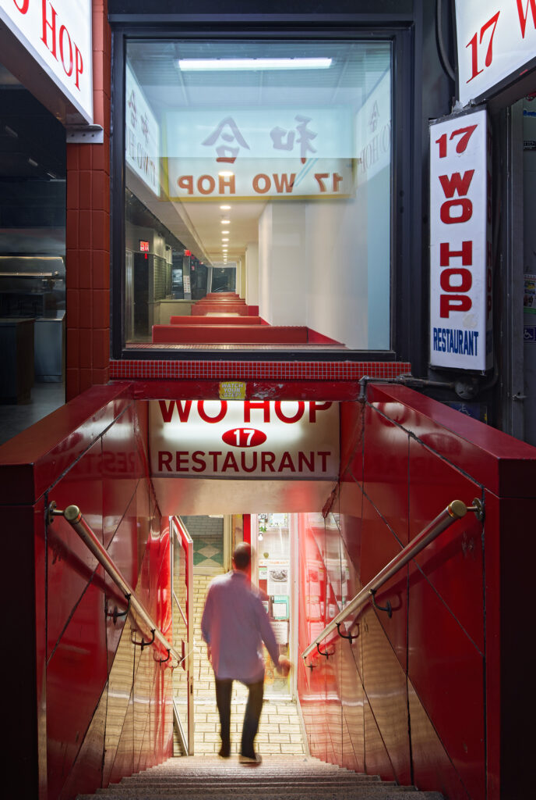
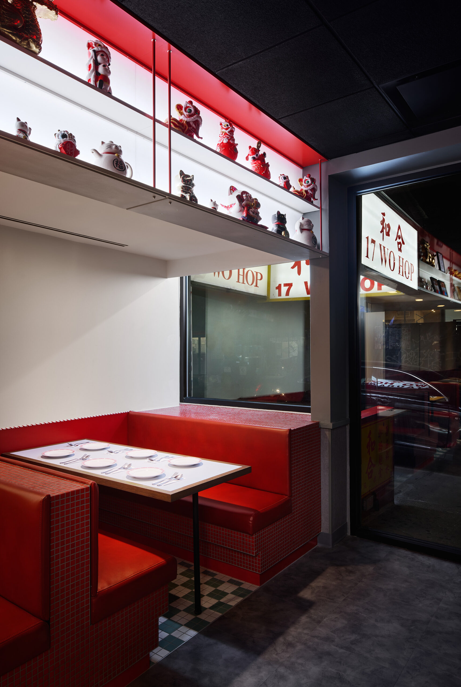
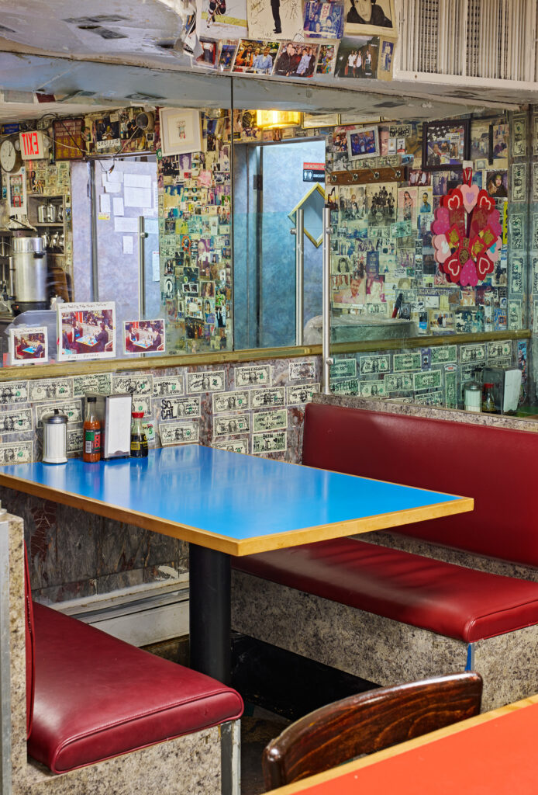
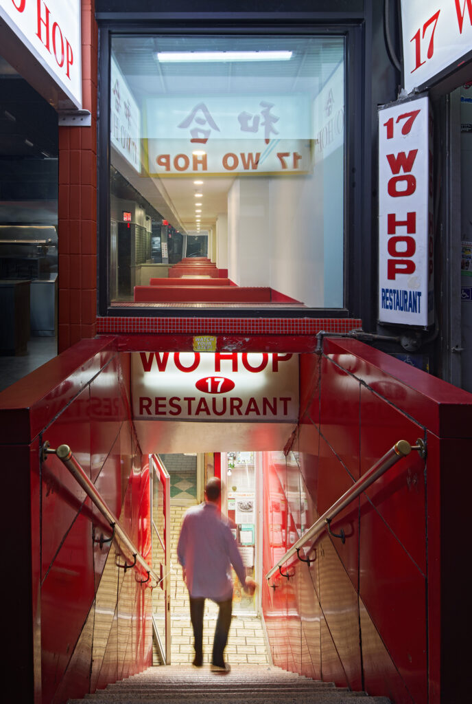
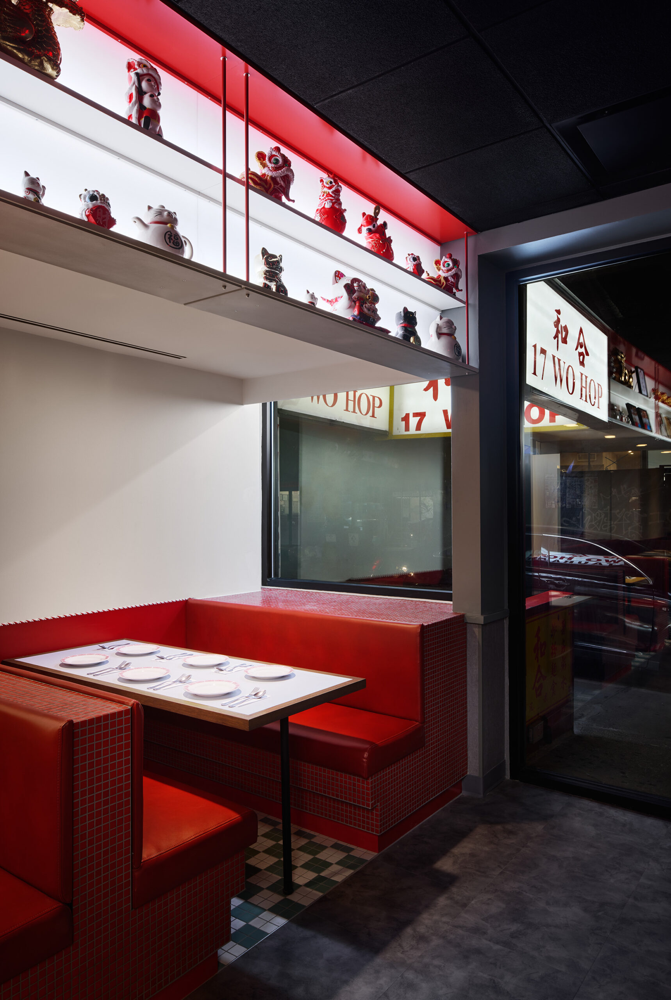
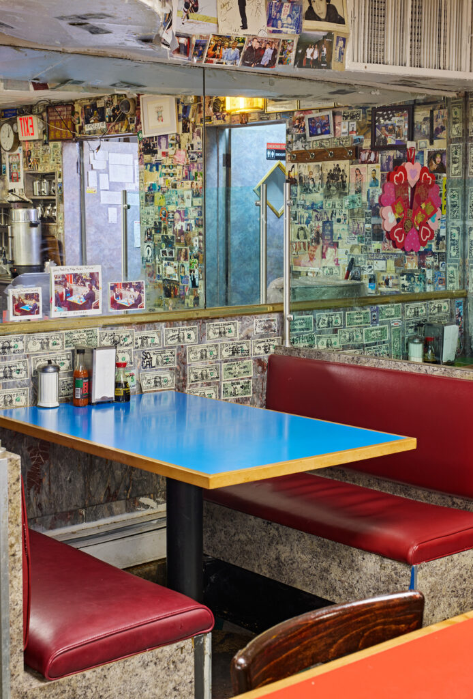

Wo Hop Upstairs
title
Wo Hop Upstairs
office
spaced agency
supervisor
Justin T.K. Ng
category
communities
+ Project Description
After nearly 90 years underground, Wo Hop—the James Beard American Classic—has surfaced at street level with a new dining room. Spaced Agency approached the expansion as an act of architectural archaeology.
 

1/4